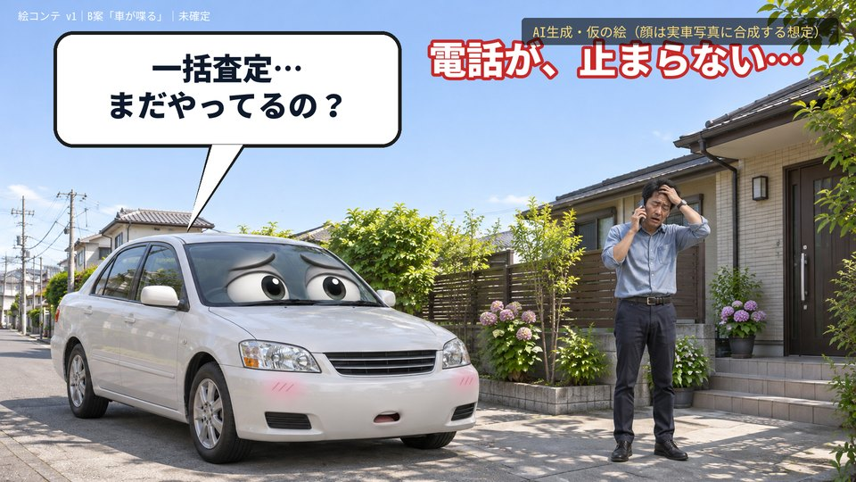
車のセリフ：一括査定… まだやってるの？
テロップ：電話が、止まらない…
ナレーション案：車を売ろうとしたら、電話が止まらない。
絵：AI生成・仮の絵（顔は実車写真に合成する想定）
株式会社KIT / KURUMAYA｜鈴木さん指示（11/6）：B案で確定／猫上等のサービス紹介のように「近くにあった」構成／車をもっと可愛く。まず絵コンテ。動画化はまだしていません。
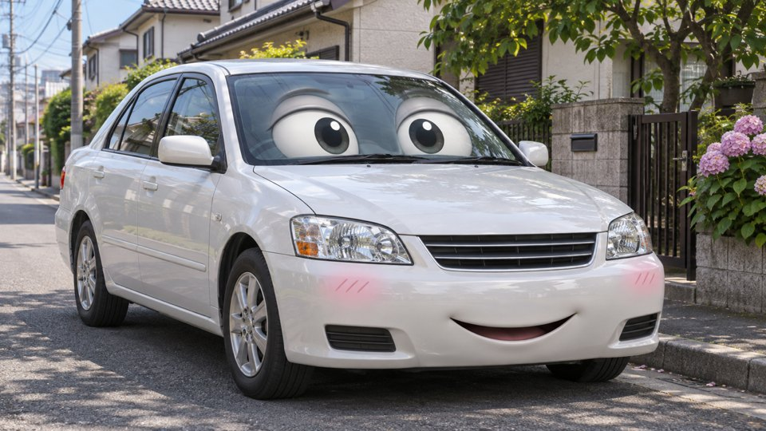
採用：フロントガラスに目。実写の質感を保ったまま可愛い。車が変わっても顔を載せ替えやすい
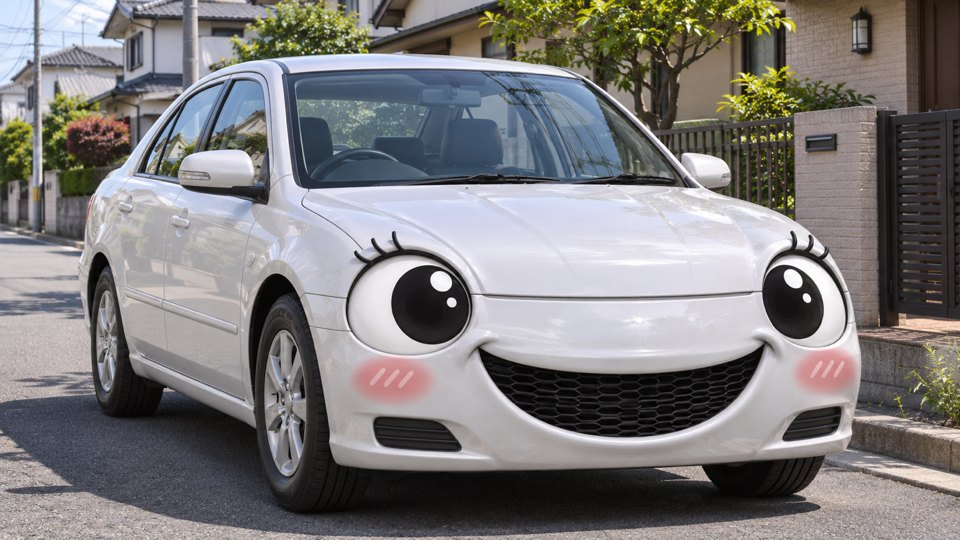
ヘッドライトが目（改良版）。笑顔は強いが、まつ毛付きで漫画寄り
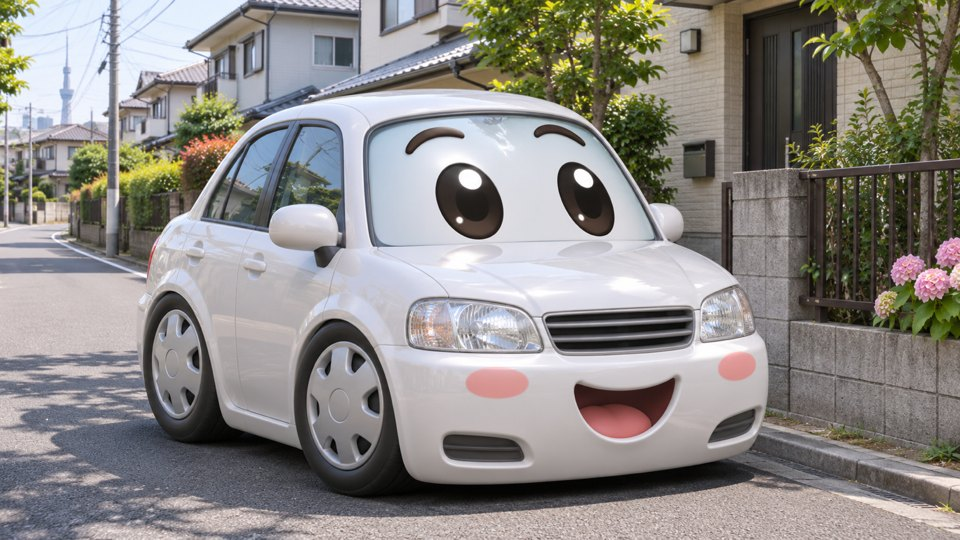
チョロQ型デフォルメ。可愛いが実写の店舗・人物と並ぶと別物に見える
表情は3種で回す：困り顔（S01〜03）／驚き（S04）／ニッ（S08・S11）。参考調査は案件フォルダ「_可愛い車キャラ_参考調査_20261106.md」。

車のセリフ：一括査定… まだやってるの？
テロップ：電話が、止まらない…
ナレーション案：車を売ろうとしたら、電話が止まらない。
絵：AI生成・仮の絵（顔は実車写真に合成する想定）
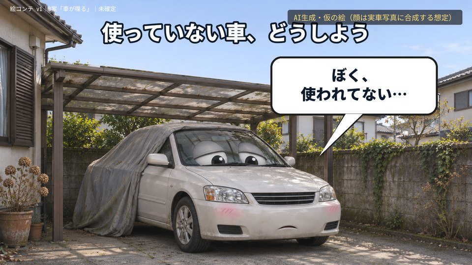
車のセリフ：ぼく、 使われてない…
テロップ：使っていない車、どうしよう
ナレーション案：使っていない車、どうしよう。
絵：AI生成・仮の絵（顔は実車写真に合成する想定）
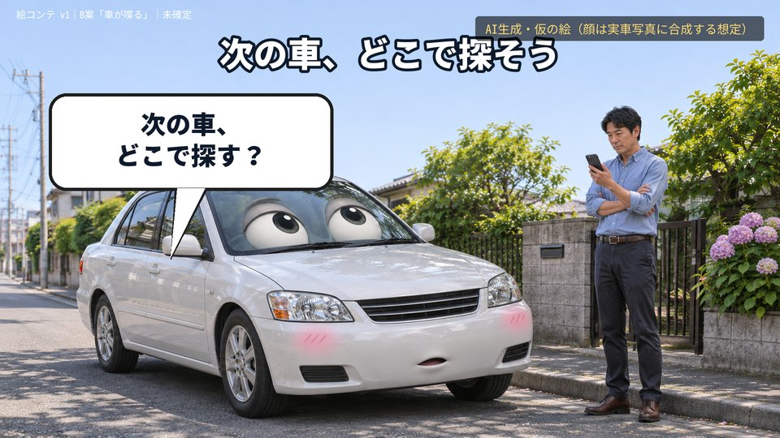
車のセリフ：次の車、 どこで探す？
テロップ：次の車、どこで探そう
ナレーション案：次の車は、どこで探そう。
絵：AI生成・仮の絵（顔は実車写真に合成する想定）
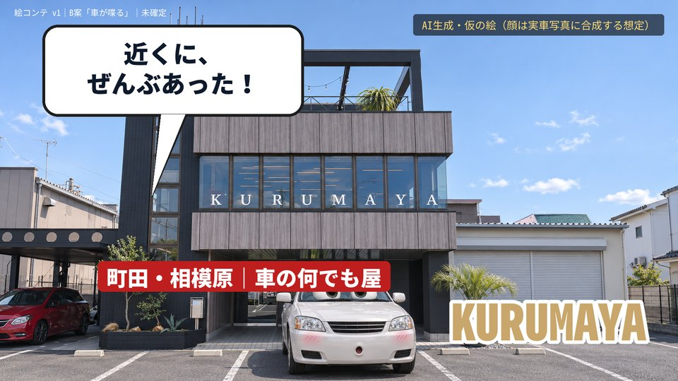
車のセリフ：近くに、 ぜんぶあった！
テロップ：町田・相模原｜車の何でも屋 KURUMAYA
ナレーション案：近くに、ぜんぶあった。町田・相模原の車の何でも屋、KURUMAYA。
絵：AI生成・仮の絵（顔は実車写真に合成する想定）
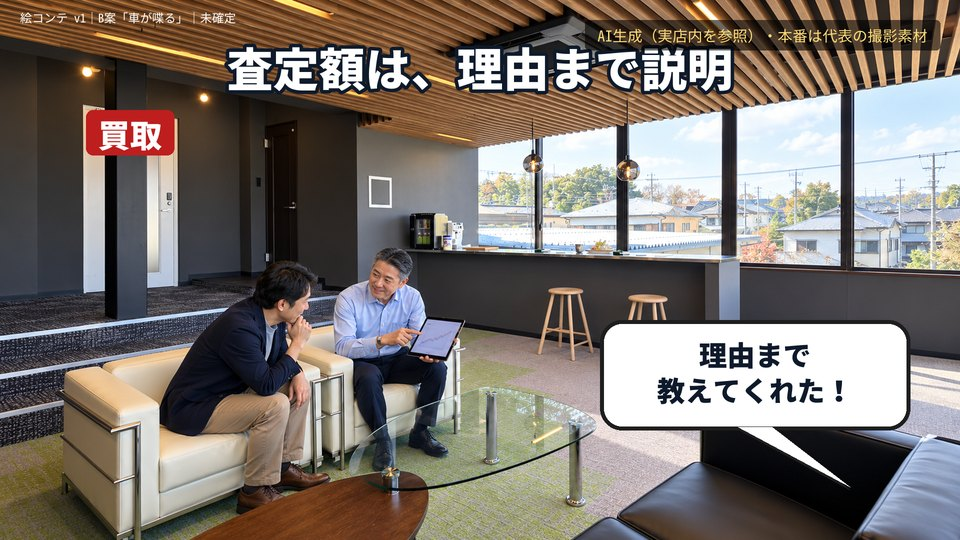
車のセリフ：理由まで 教えてくれた！
テロップ：査定額は、理由まで説明
ナレーション案：買取は、年式、走行距離、状態、相場。数字の裏付けつきで説明します。
絵：AI生成（実店内を参照）・本番は代表の撮影素材
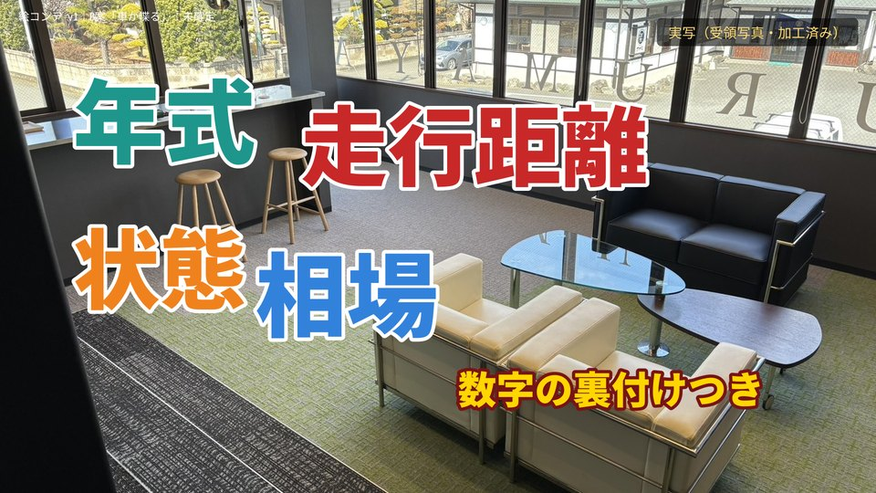
車のセリフ：—
テロップ：年式／走行距離／状態／相場「数字の裏付けつき」
ナレーション案：（S05のナレーションの続き）
絵：実写（受領写真・加工済み）
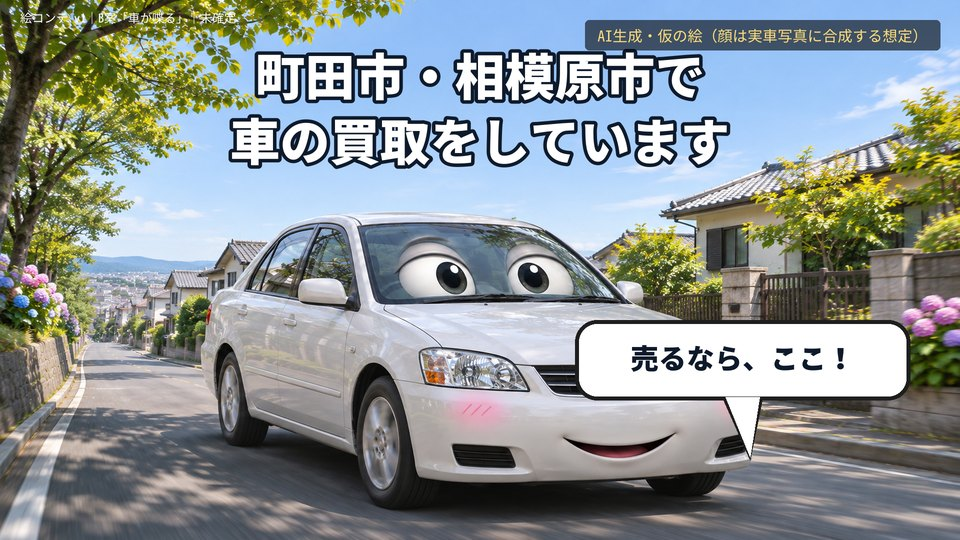
車のセリフ：売るなら、ここ！
テロップ：町田市・相模原市で車の買取をしています
ナレーション案：町田市・相模原市で、車の買取をしています。
絵：AI生成・仮の絵（顔は実車写真に合成する想定）
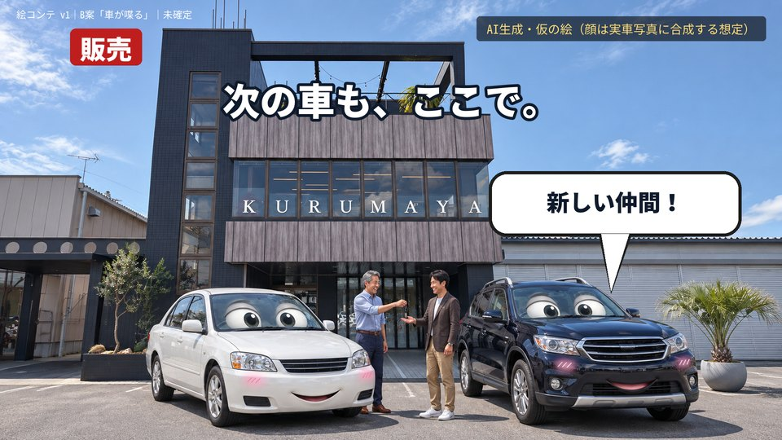
車のセリフ：新しい仲間！
テロップ：販売｜次の車も、ここで。
ナレーション案：次の車も、ここで。
絵：AI生成・仮の絵（顔は実車写真に合成する想定）
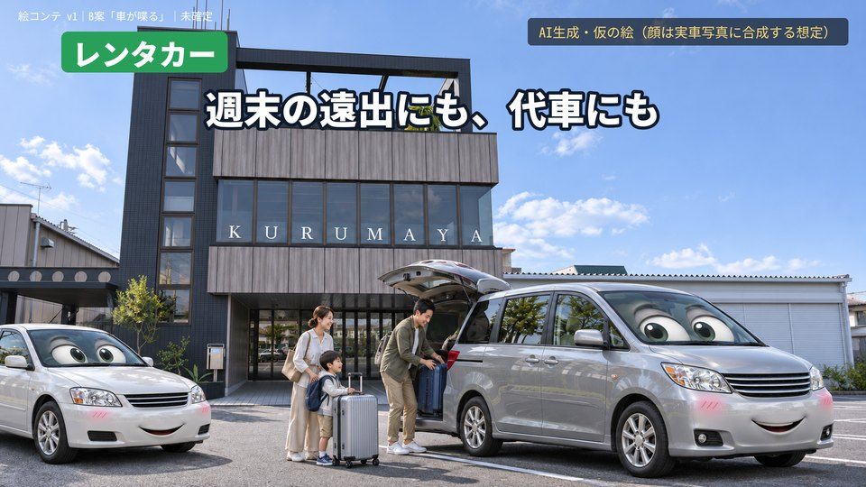
車のセリフ：—
テロップ：レンタカー｜週末の遠出にも、代車にも
ナレーション案：レンタカーも。週末の遠出にも、代車にも。
絵：AI生成・仮の絵（顔は実車写真に合成する想定）
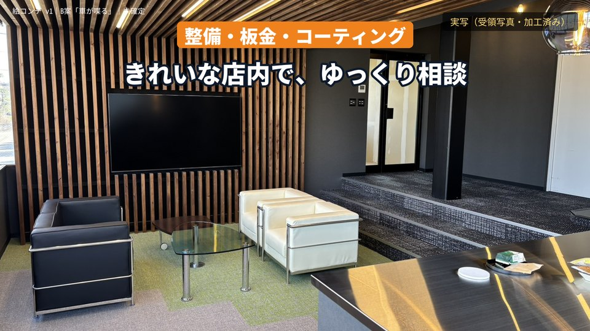
車のセリフ：—
テロップ：整備・板金・コーティングも（提携先）
ナレーション案：整備、板金、コーティングも。
絵：実写（受領写真・加工済み）
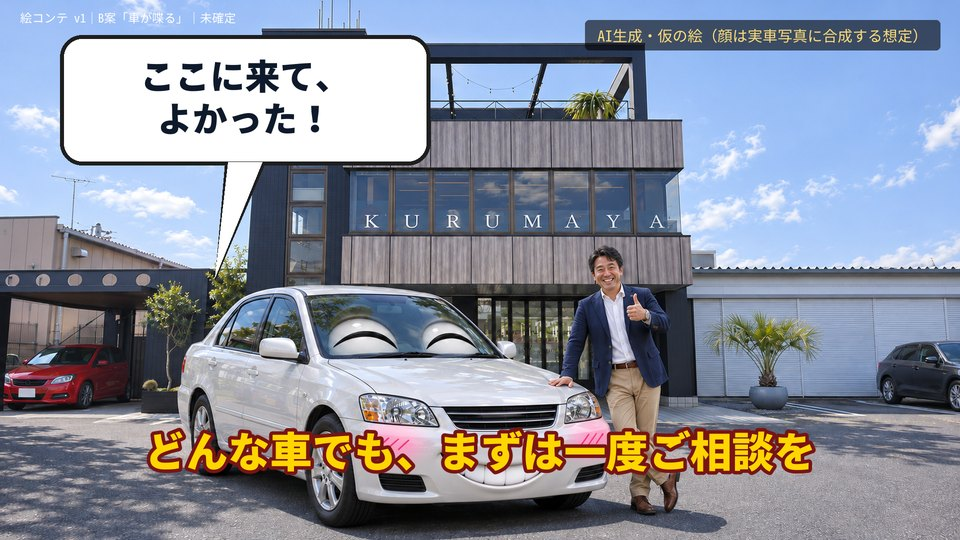
車のセリフ：ここに来て、 よかった！
テロップ：どんな車でも、まずは一度ご相談を
ナレーション案：どんな車でも、まずは一度ご相談を。
絵：AI生成・仮の絵（顔は実車写真に合成する想定）
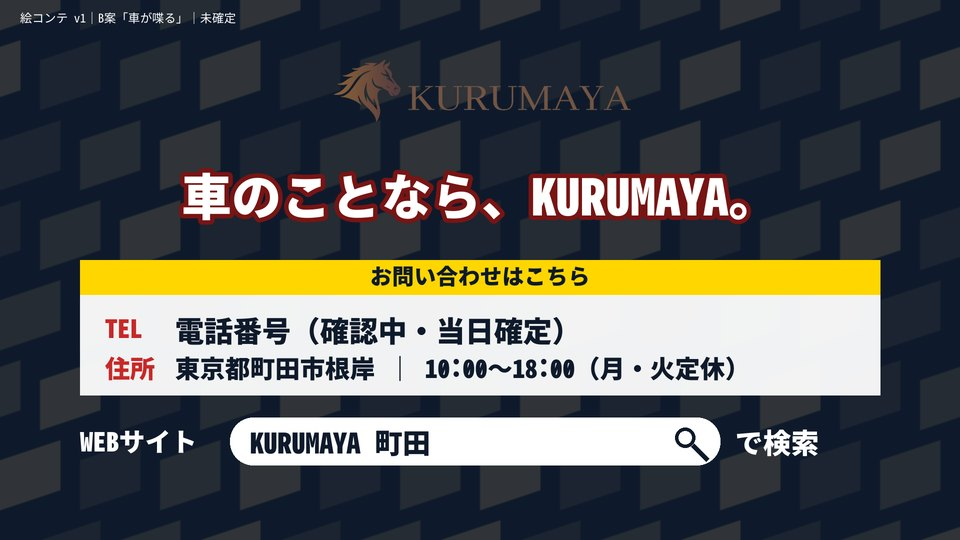
車のセリフ：—
テロップ：車のことなら、KURUMAYA／町田市根岸／「KURUMAYA 町田」で検索
ナレーション案：車のことなら、KURUMAYA。
絵：エンドカード
| 猫上等 | KIT B案 |
|---|---|
| 猫のことで、お困りの方へ／洗えない・預けられない・留守にできない・いなくなった（悩み4連） | 一括査定の電話が止まらない／使っていない車／次の車どこで（悩み3連・車がぼやく） |
| ぜんぶ、ここで。群馬県で唯一、猫の全部を扱う、猫上等。 | 近くに、ぜんぶあった！ 町田・相模原の車の何でも屋、KURUMAYA。 |
| 猫シャンプー／猫ホテル／猫シッター／猫探偵（各1カット） | 買取（根拠まで説明）／販売／レンタカー／整備・板金・コーティング（各1カット） |
| 猫のことは、まずLINEで。ねこじょうとう。 | どんな車でも、まずは一度ご相談を。車のことなら、KURUMAYA。 |